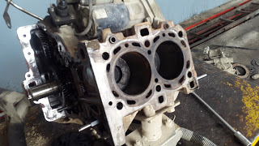
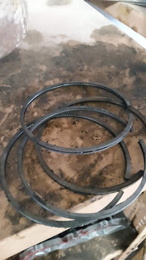

Failure of EngineA internal combustion engine is a mechanical heat engine that is an assembly of different mechanical components. There are many components in an engine so there also a chance of failure of overall engine due to the failure of small components. Failure in engine is a very serious case because without a properly working engine a vehicle can not run is a desired condition. There are tones of failure that affects the engine but some of the major cases of failure in internal combustion engine seen in automobile workshops are as follows.
All the failures and causes listed above are some of the major cases of failure however there are tons of minor failures. Avoidance of such failure is not possible however possibility of such failures can be reduced with the help of preventive and routine maintenance. Some of the failures may cause damage to the internal components of the engine which can not be repaired hence has to be replaced and replacement of any engine component is much higher in price. Therefore as soon as any effects is seen in an engine it should be immediately taken to workshop for failure analysis and maintenance. ExampleThe piston shown in the figure is a faulty piston whose rings were damaged that caused high consumption of the lubrication oil and abnormal noise due to vibration of piston. And the rings shown in the figure are the replaced ring for overcoming the engine failure. the engine head also had to be replaced because the failure had been for a long time enough to damage the cylinder head. | |||||||||||||||||||||||||||||||||||||||||||||||